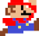
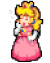
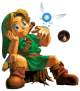

 O que é Retro?
Retrô ou Retro é um estilo cultural desatualizado ou velho, uma tendência, hábito, ou moda do passado pós-moderno global, mas que com o tempo se tornam funcionalmente ou superficialmente a norma mais uma vez.
Onde Surgiu?
A palavra "retro" deriva do prefixo latino retro, que significa "para trás" ou "em tempos passados" - particularmente como visto na forma de palavras retrógradas, o que implica num movimento em direção ao passado, em vez de um progresso em direção ao futuro e, a posteriori, referindo-se um olho crítico ou nostálgico do passado.
Por que retrogaming?
Retrogaming (que poderia ser entendido como "Jogos retros") é um passatempo que está se tornando cada vez mais popular onde as pessoas jogam videogames em computadores ou consoles vintage de jogo, embora o que constitui uma máquina vintage ou retrô está aberta ao debate.[4] Normalmente os jogadores mais retrôs são interessados em consolas: Atari 2600, Nintendo Entertainment System, Mega Drive, Dreamcast, Super Nintendo, Game Boy ou computadores: Atari ST, Commodore Amiga, Zx spectrum, MSX.
Click aqui Para Saber mais sobre os estilos Retrogaming.
Sobre Retro Game Center
A página Retro-Game-Center veio de uma ideia para conteúdo de jogos antigos e nostálgios para mostrar a nova geração que os jogos antigos apesar de não terem muita qualidade gráfica,são capazes de nos proporcionar experiências incriveis com sua jogabilidade e hitórias que faziam deles o passatempo de jogadores mais casuais.